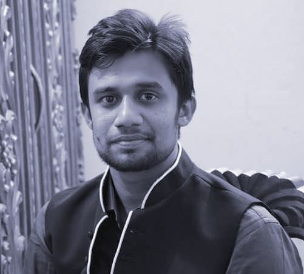

Curriculum vitae

Sk. Nazmul Ahammed Nayeem
Kalabagan, Dhaka
E-mail: nazmul3771@diu.edu.bd
Mobile: 01681-717393
Career Objectives:
I seek to work with the organization where I can use my knowledge with honesty, dignity and proficiency.
I have been interest in developing my career in such an environment where there would be enough scope for enhancing my knowledge and developing myself. I believe in a motto that is “First work than Rest”.
Educational Qualification:
SSC : Cantonment High School, Jessore.
HSC : Cantonment College, Jessore.
B.Sc : Daffodil International University, Dhaka.
Professional Skills:
- Good Managerial & communicative competency
- Programming and others
- HTML5, CSS, Bootstrap, JS
- C, PHP, Database, Data Entry
- CMS(Wordpress), Website theme developing
- Excellent in using computer applications
- MS Word, MS Excel, MS Power point
- Internet browsing, Email correspondences
Personal Information:
- Name : Sk. Nazmul Ahammed Nayeem
- Father Name : Sk. Mansur Ahammed
- Mother Name : Rehana Begum
- Date of Birth : 14-03-1995
- Gender : Male
- Religion : Islam
- Nationality : Bangladeshi
Address:
- Present Address :
#97/2, Bashiruddin Road
Kalabagan, Dhaka
- Parmanent Address :
Village: Nurpur
Thana: Sadar
District: Jessore
Statement of Integrity:
I declare that all information furnished in this CV are correct and complete

SIGNATURE
Thank you